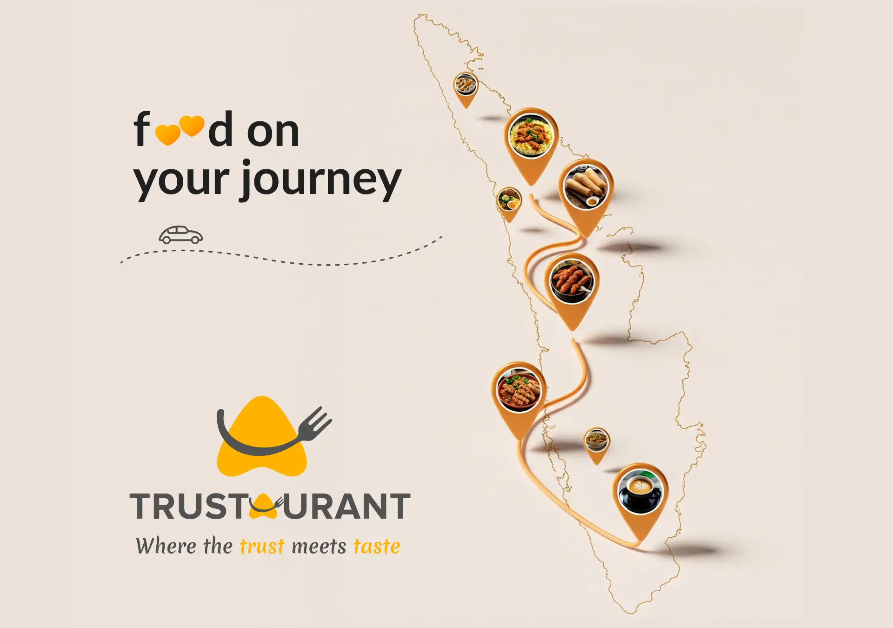
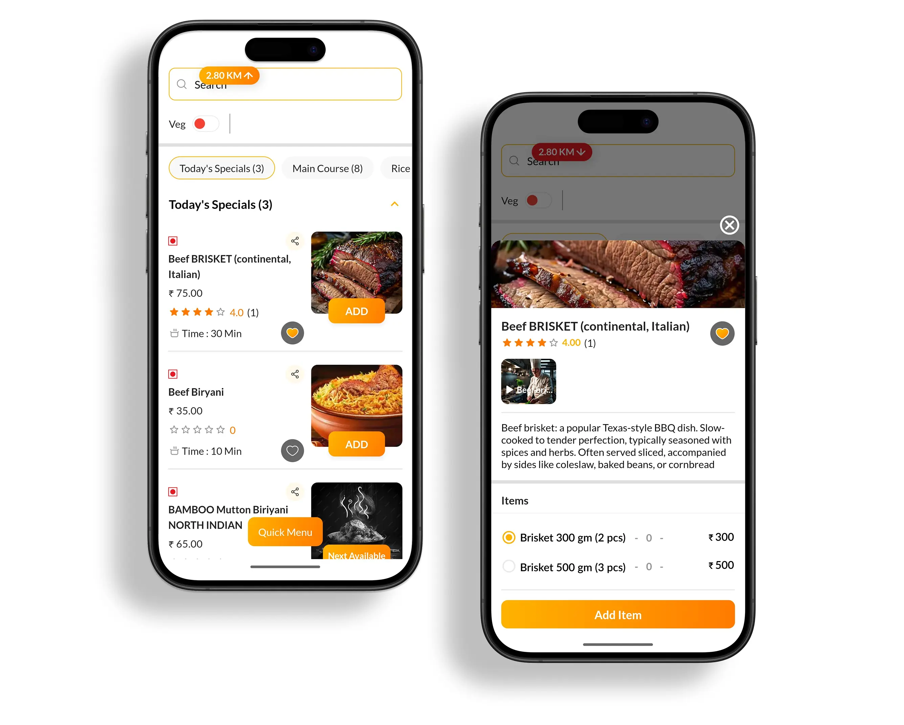

Dining out usually means going out to eat at a restaurant, reviewing the menu and then ordering the food. Then comes the waiting period where you sit at your table hungry and slowly grow impatient wondering how much longer would it take for the food to arrive. This familiar process can be exhausting when you are at a restaurant during peak hours or when you decide to stop for food after travelling for a long time. At times like this, have you ever wished that your food was ready just when you walked inside a restaurant?
In order to address this concern, Trustaurant has introduced its Advanced Ordering feature which enables users to order food in advance through its pre-ordering system before reaching the restaurant. Trustaurant is a dining and reservation app based in Kerala that understands the value of your time. By integrating the pre-ordering feature, the platform wishes to elevate the traditional dining experience by offering convenience and authenticity.
The Advanced Order feature is simple and easy to use. All you have to do is
You simple have to register and login to the Trustaurant reservation and dining app.
Go through the list of restaurants in Kerala. It could be any restaurants near you, restaurants on route or any restaurant that caught your attention. Trustaurant offers multiple ways to explore.
Once you have decided the restaurant, you can get access to the Live Restaurant Food menus. The list is updated and current. Each dish clearly displays its preparation time and availability.
After reviewing the preparation time and availability of the dish, users can simply add their preferred dishes to the cart and confirm the order.
You can select your expected arrival time and also the number of people visiting.
Once you have selected everything, you can simply confirm the details and place your order by making the payment.
Trustaurant also displays the direction to the restaurant. You just have to select 'Get direction' to your restaurant option. So, by the time you arrive at the restaurant dining table, your food is already in progress.
After arriving at the restaurant, if you wish to add more items, you can inform the restaurant staff. The new items are added to your already existing bill.

Trustaurant designed this feature to make pre-ordering food effortless, keeping the convenience of its customers in mind. The advance ordering feature aims to make dining a pleasant and optimized experience for all by:
During those days when the restaurants experience a heavy footfall because of crowded weekends, holidays or peak hours, waiting at a place for a long time could be tiresome and chaotic. However, with Advanced Ordering, the waiting period is reduced because the preparation begins even before you arrive.
Advance ordering works especially well when you are visiting a restaurant with your family. Oftentimes, the children grow impatient for food whereas the elderly find long wait hours uncomfortable. Thus, with Trustaurant, you can enjoy a smooth dining.
The amount of travellers that visit Kerala increases each year and with that, travel dining becomes more common. Many people stop at restaurants after long drives and for that Trustaurant offers a route-based restaurant discovery option which allows users to identify dining spots that fall directly along their journey. Both the route based restaurant discovery and pre-ordering system are equally beneficial for travellers as you get to find restaurants directly along your route and then order food in advance before reaching the restaurant. In this way dining becomes predictable, structured and time efficient for travellers who are hungry, tired, confused or running on a tight schedule.
The effectiveness of the Advanced Ordering system is further strengthened by its integration with the Live Menu feature. Traditional food discovery apps or google reviews of restaurants mostly use static restaurant menus. The menus are out-dated, a variety of food options are unavailable and you only find that out after you reach the restaurant. The prices could be different or a dish might be unavailable when you reach the restaurant. Trustaurant introduced the Live Menu feature taking all such problems into account. The Live Menu provides real-time updates on dish availability and preparation time. Users can see how long a particular item will take and whether it is currently available. This transparency ensures that pre-orders are accurate and aligned with the capacity of the kitchen. The integration of live menu updates with pre-ordering creates a system that reflects the standards of efficiency and convenience Trustaurant aims to provide its users.
Advanced Ordering is only one part of what Trustaurant has to offer. It is much beyond a regular restaurant reservation app. Trustaurant is a comprehensive restaurant platform designed to elevate the dining experience for people all across Kerala. From helping users find restaurants to enabling seamless restaurant booking and pre-ordering the platform ensures that every stage of the outing is organised. It prioritizes quality and transparency thereby, each of the restaurants listed on Trustaurant are the best restaurant options in each area. Trustaurant follows a strict criteria of selection and thus users can be assured that each of the partner restaurant are in firm accordance to the standards set by Trustaurant. Restaurants on the platform emphasize of hygiene, accessibility and comfort. In a growing digital landscape, Trustaurant continues to redefine how people approach dining in Kerala.
Download Trustaurant now and embark on a culinary journey like never before!